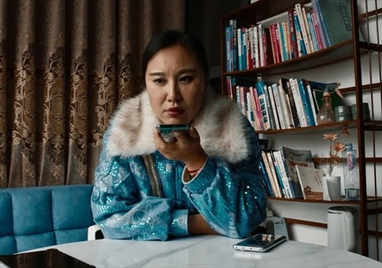

About the film

In China, a new industry has emerged devoted to helping couples stay married in the face of infidelity. Wang Zhenxi is part of this growing profession, a "mistress dispeller" who is hired to maintain the bonds of marriage, and break up affairs by any means necessary. Offering strikingly intimate access to private dramas usually hidden behind closed doors, Mistress Dispeller follows a real, unfolding case of infidelity as Teacher Wang attempts to bring a couple back from the edge of crisis. Their story shifts our sympathies between husband, wife and mistress to explore the ways emotion, pragmatism and cultural norms collide to shape romantic relationships in contemporary China.
At the festival
- 2024 Saturday, November 9, 2024 · 8:30 PM · U.S. Naval Heritage CenterFollowed by post-screening discussion with producer Emma D. Miller, moderated by Diana Jean Schemo of Double Exposure.
Sessions about this film
- 2024 · Fri Nov 8 · 10:45 AMPanel · DX²Personal Stories, Universal Impact: The Power of Investigative FilmmakingGerad Argeros, Debra Aroko, Erika Cohn, Emma D. Miller, Rajal Pitroda, Russell Leigh Sharman, Russell Leigh Sharman
More films on these topics
 We Bloom in Spring2025 · 19 min
We Bloom in Spring2025 · 19 min Dust to DustKôsai Sekine2024 · 89 min
Dust to DustKôsai Sekine2024 · 89 min All Static & NoiseDavid Novack2023 · 102 min
All Static & NoiseDavid Novack2023 · 102 min The GrabGabriela Cowperthwaite2022 · 104 min
The GrabGabriela Cowperthwaite2022 · 104 min Myanmar DiariesThe Myanmar Film Collective2022 · 70 min
Myanmar DiariesThe Myanmar Film Collective2022 · 70 min Do Not CirculateTiffany Sia2021 · 17 min
Do Not CirculateTiffany Sia2021 · 17 min